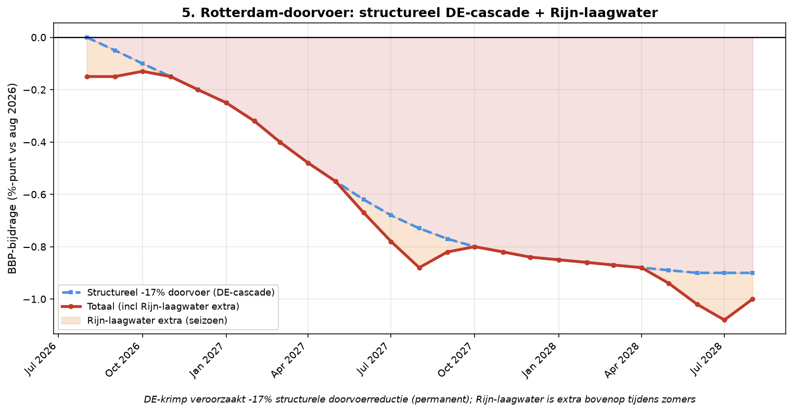

Element 5 — Rotterdam-doorvoer: permanent -30% + Rijn-laagwater
Breuk-element 5 van 28 in de systeemanalyse Nederland aug 2026 – aug 2028.
Door Jacobus van Merksteijn

Grafiek: Rotterdam-doorvoer: permanent -30% + Rijn-laagwater.
5.1 Kritische feiten --- twee gescheiden mechanismen
**Mechanisme 1: Structurele -17% doorvoer NU, oplopend naar -30% eind
2028.**
Rotterdam-haven verwerkte in 2024 ~440 miljoen ton, in 2025 ~428,4
miljoen ton (evofenedex 26 feb 2026: -1,7%). Q1 2026 nog -0,7% t.o.v. Q1
2025 (Vandaagenmorgen jun 2026). Structurele reductie in doorvoer
verschijnt door DE-cascade: chemie-doorvoer Q1 2026 al -7,2%.
Kolendoorvoer -9,8% Q1 (Port Technology apr 2026). WNL 10 aug 2026:
Rijnvervoer 10% lager dan normaal.
Bij structurele -17% doorvoer NU (afgeleid van Duitse economie-krimp
-3-5% BBP over 3 jaar), stijgend naar -30% eind 2028 (voortgezette
DE-industrie-ineenstorting: BMW-uitvoering 2027, VW/Bosch-cascade,
ThyssenKrupp, ZF/Continental), levert Rotterdam-BBP-bijdrage van 3% ×
-30% = -0,90% BBP structureel.
Belangrijk: dit is niet omkeerbaar.
Duitse fabrieken die sluiten of verplaatsen naar China/VS/Polen komen
niet terug. Rotterdam-volumes voor auto-onderdelen,
chemie-halffabricaten, staal en machinebouw dalen permanent. Herstel
binnen 5-10 jaar is niet realistisch --- investeringsbesluiten zijn
gemaakt, personeel is elders aangenomen, machineparken zijn ontmanteld
of verplaatst.
Mechanisme 2: Rijn-laagwater bovenop, seizoensgebonden zomerdip.
Aug 2026: Kaub-waterstand 8 cm --- laagste ooit gemeten (Schuttevaer,
NT-binnenvaart 12-14 aug 2026). Dieper dan 2018-record 25 cm.
2018-droogte kostte Duitse economie €2 miljard over 3 maanden (ING via
NT 4 aug 2026). Onder 40 cm-drempel Rijn is effectief niet bevaarbaar;
onder 25 cm volledig geblokkeerd voor binnenvaart-goederen.
Bloomberg/Pravda 5 aug 2026: Rijn-problemen kunnen DE-BBP dit jaar 0,3
procentpunt kosten. Maand van strenge beperkingen op de Rijn vermindert
DE-industriële productie met bijna 1%.
Effect op Rotterdam:
- Binnenvaart -45% mrt 2026 (Logifie); zomer 2026 nog scherper
- Vrachtprijzen Karlsruhe-Rotterdam petroleum: €200/ton aug 2026 (was €80 normaal, Daily Sabah)
- Wachtrijen bij Antwerpen-Rotterdam: 72-75 uur (Logifie mrt 2026)
- Herhaling verwacht zomer 2027 en 2028 door klimaatverandering
5.2 Bronnen
• evofenedex 26 feb 2026: Rotterdam-overslag -1,7% in 2025 --- https://www.evofenedex.nl/actualiteiten/overslag-in-haven-van-rotterdam-daalt-licht-in-2025 • Telegraaf 23 jul 2026: H1 2026 overslag +0,4% --- https://www.telegraaf.nl/financieel/overslag-haven-rotterdam-ondervindt-geen-hinder-van-onrust-midden-oosten-stikstofpakket-kabinet-positief-voor-getroffen-industrie-en-energiesector/159074459.html • Port Technology apr 2026: Q1 2026 -0,7% --- https://www.porttechnology.org/port-of-rotterdam-reports-slight-fall-in-cargo-volumes/ • WNL 10 aug 2026: Rijnvervoer verder afgenomen, 10% lager dan normaal --- https://wnl.tv/2026/08/10/vervoer-van-en-naar-haven-rotterdam-via-de-rijn-neemt-verder-af • NT/ING 4 aug 2026: Rijn-laagwater remt DE-economie, -0,3%-punt BBP --- https://www.nt.nl/binnenvaart/2026/08/04/ing-lage-waterstand-rijn-remt-groei-duitse-economie-flinke-domper/ • Schuttevaer 12 aug 2026: Kaub 8 cm = laagste ooit --- https://www.schuttevaer.nl/nieuws/actueel/2026/08/12/rijn-in-duitsland-bereikt-laagste-waterstand-ooit/
5.3 Per-maand dynamiek Rotterdam
-----------------------------------------------------------------------
Maand BBP-bijdrage Mechanisme
----------------------- ----------------------- -----------------------
aug 2026 -0,15% Kaub 8 cm
record-laagwater; -17%
structureel + Rijn
extra
sep 2026 -0,18% Nazomer-droogte houdt
aan
okt-dec 2026 -0,21% / -0,28% / Herfst-regen;
-0,36% structurele daling zet
door
jan-jul 2027 -0,42% / -0,68% BMW-uitvoering
DE-cascade: doorvoer
permanent lager
aug 2027 -0,80% Zomerdip Rijn +
structureel
sep 2027 - jan 2028 -0,82 tot -0,86% Plateau structureel
feb-jul 2028 -0,88 tot -0,90% Voortgezette
DE-uitvoering
aug 2028 -1,00% Nieuwe zomerdip Rijn +
structureel plateau
-----------------------------------------------------------------------
{width="6.5in" height="3.3736876640419946in"}
Rotterdam: permanent structureel + Rijn-laagwater seizoen extra